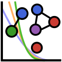

EDDPotentials.jl
A Julia package that implements the Ephemeral data derived potentials (EDDP). EDDP can be seen as a kind of Machine Learning (Interatomic) Potentials (MLP). Normally such potentials are aim at accurately reproduce the results of first-principles calculations to run large scale molecular dynamics simulation which are otherwise intractable with first-principles calculations.
EDDP takes a simple and physically motivated form that resembles a generalized N-body Lenard-Jones-like potential, making it very easy to train. Being physically motivated allow EDDP to give sufficiently good representations for most of the configuration space, allowing crystal structure prediction to be carried out with much reduced computational resources and walltime. In many cases, EDDP can still give sufficiently accurate forces to allow molecular dynamics simulation and phonon properties.
Features
- Generating EDDP feature vectors (local descriptors).
- Train EDDP ensemble models.
- Perform geometry optimization using trained models.
- Interface to other package for property calculations.
- Automated workflows for automated potential building and crystal structure prediction.
- Training data generation using standard scheduler queue system.
- Training data generation through DISP.
- Analysis and visualisation for potential quality verification and convergence.
Related packages
- airss - ab initio random structure (AIRSS) is used for building random structure through the
buildcellprogram included in the bundle. - eddp - The Fortran EDDP code. EDDPotentials.jl provides limited interoperability with the eddp fortran package. Although directly loading models trained by eddp is not implemented, the training datasets are compatible as both use the AIRSS-style SHELX format.
- CASTEP - A plane-wave DFT code used for efficient generation of training datasets, although in principle any atomistic modelling package that calculates total energy of a given structure is supported.
- disp - Distributed structure prediction (DISP) package can be used to schedule and run data generation tasks (e.g. DFT calculations) on multiple remote computing clusters.
Documentations
- Getting Started
- FAQ
- Using Python tools
- Ab initio Random Structure Searching (AIRSS)
- Ingredients of a search
- When to (not) stop
- The AIRSS package
- The
paramfile